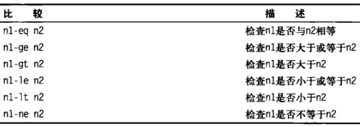
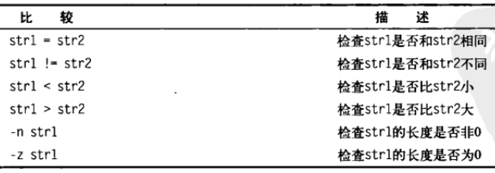
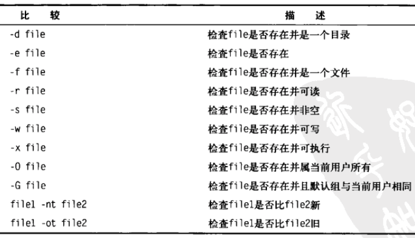
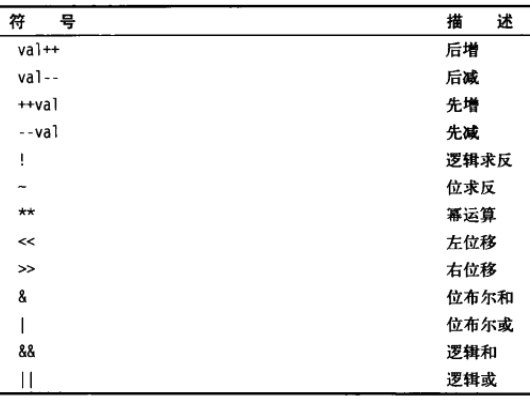
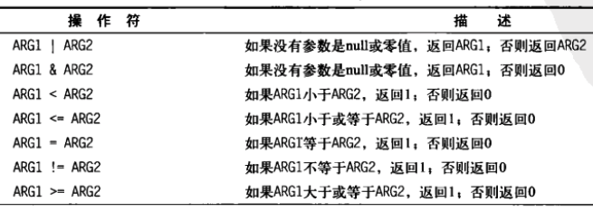
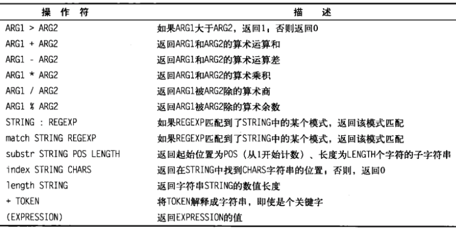

shell 控制语句
Sun 13 August 2017 by Little Captainif-then语句
- bash 的 if 语句会运行 if 行定义的那个命令. 如果命令的退出状态码是0, 位于 then 部分的命令会被执行
if command
then
commands
fi
if command; then
commands
fi
if-then-else语句
if command
then
commands
else
commands
fi
嵌套 if
if command1
then
commands
elif command2
then
commands
fi
test 命令
- 如果 test 命令中列出的条件成立, test 命令就会退出并返回状态码 0
test condition
if test condition
then
commands
fi
# test 命令的简写形式
# 方括号定义了 test 命令中用到的条件
# condition 左右的空格是必须的
if [ condition ]
then
commands
fi
数值比较
数值比较

if [ $val -gt 5 ]
then
echo "The test value $val is greater than 5"
fi
字符串比较
字符串比较

- 字符串大小比较
- 大于小于符号必须转义, 因为它们和重定向符号冲突
- 大于小于顺序和sort命令所采用的不同. 在 test 命令中, 大写字母小于小写字母. sort 命令, 则相反. test 命令使用标准的 ASCII 顺序. sort 命令使用系统的本地化语言设置中定义的排序顺序.
文件比较
文件比较

复合条件测试
- [ condition1 ] && [ condition2 ]
- [ condition1 ] || [ condition2 ]
if-then 的高级特性
使用双尖括号
- 任意的数学
赋值或比较表达式
# 可以放入类似C语言中的高级数学表达式
(( expression ))
双尖括号命令符号

使用双方括号
- 支持 test 命令中的标准字符串比较
- 高级特性 : 模式匹配. 也就是你可以定义一个正则表达式来匹配字符串
[[ expression ]]
if [[ $USER == r* ]]
then
echo Hello
fi
case 命令
# 一旦某个模式匹配了, 后面的模式将不会再进行匹配
case variable in
pattern1 | pattern2) commands1;;
pattern3) commands2;;
*) default commands;;
esac
for 命令
for var in list
do
commands
done
- list 中有特殊字符, 可以使用转义, 或使用引号括起来
从变量读取列表
list="Alabama Alaska Colorado"
# 向变量中添加文本字符串
list=$list" Arizona"
for state in $list
do
echo $state
done
从命令读取值
file="states"
for state in `cat $file`
do
echo "Visit beautiful $state"
done
更改字段分隔符
IFS 内部字段分隔符, 这个 bash 环境变量保存用作 bash 字段分隔符的字符. 默认的字段分隔符是: 空格、制表符、换行符
- 可以在 shell 脚本中改变 IFS的值, 当退出 shell 脚本时, IFS 会恢复默认值
- 当在一个脚本中, 需要恢复默认值时, 可以使用一个变量暂存
# 仅仅换行符
IFS=$'\n'
# shell 中暂存
IFS.OLD=$IFS
IFS=$'\n'
# code
IFS=$IFS.OLD
# 指定多个分隔符
IFS=$'\n:;' # 换行符、冒号、分号
使用通配符读取目录
- 使用 for 命令遍历目录中的文件, 可以使用通配符
- 文件扩展通配 : 生成匹配指定的通配符的文件名或路径名的过程
for file in /home/rich/test/*
do
if [ -d "$file" ]
then
echo "$file is a directory"
elif [ -f "$file" ]
then
echo "$file is a file"
fi
done
# 在 for 命令中通过列出一系列的目录通配符来将目录查找方法和列表方法合并到同一个 for 语句中
for file in /home/rich/.b* /home/rich/badtest
do
if [ -d "$file" ]
then
echo "$file is a directory"
elif [ -f "$file" ]
then
echo "$file is a file"
fi
done
C语言风格的 for 命令
for (( variable assignment; condition; iteration process ))
# C 风格 for 命令
for (( i = 1; i <= 10; ++i ))
do
echo "The next number is $i"
done
# 使用多个变量
for (( a = 1, b = 10; a <= 10; ++a, --b ))
do
echo "$a - $b"
done
while 命令
while test command
do
other commands
done
var1=10
while [ $var1 -gt 0 ]
do
echo $var1
var1=$[ $var1 - 1 ]
done
使用多个测试命令
- 只有最后一个测试命令的退出状态码会被用来决定什么时候结束循环
var1=10
while echo $var1
[ $var1 -gt 0 ]
do
echo "This is inside the loop"
var1=$[ $var1 - 1 ]
done
until 命令
- until 命令和while 命令工作的方式完全相反.
- 退出状态码非零, 循环执行; 退出状态码为零, 循环结束
until test commands
do
other commands
done
嵌套循环
- 循环套循环
控制循环
break
- 跳出当前层循环
break
- 跳出指定层级的外部循环
# 默认 n 为 1, 向外递增
break n
continue
- 继续当前层循环
continue
- 继续指定层级的外部循环
# 默认 n 为 1, 向外递增
continue n
处理循环的输出
- shell 中处理输出, 要么管接, 要么重定向
# done 后添加一个处理命令来处理输出
for file in /home/rich/*
do
# code
done > output.txt
shell 数学运算
Sat 12 August 2017
by Little Captain
expr 命令
- expr 命令允许在命令行上处理数学表达式
expr 1 + 5
expr命令操作符


- 尽管标准操作符在 expr 命令中工作得很好, 但在脚本或命令行上使用它们时就会有问题, 因为许多 expr 命令操作符在 shell 中有其他意思. 可以进行转义
# 操作数和运算符之间必须要有空格
expr 5 \* 2
使用方括号
- 在 bash 中, 在将一个数学运算结果赋给某个变量时, 可以用美元符合方括号( $[ operation ] )将数学表达式圈起来
- 这比使用 expr 命令方便很多, 方括号里面的字符不会认为是 shell 中的特殊字符
- bash 只支持整数运算. zsh 提供了完整的浮点运算
var1=$[1 + 5]
浮点解决方案
bc
- bash 计算器允许你在命令行输入浮点表达式、解释表达式、计算并返回结果的一种编程语言.
- bash …
shell 脚本编程基础
Sat 12 August 2017
by Little Captain
基础
- 同
一行多个命令顺序执行, 使用;
data;who
- 创建shell脚本文件
- 在文件的
第一行指定要使用的shell
#!/bin/bash
- 显示消息
echo This is a test
echo Let\'s see if "this'll" work
echo "Let's see if this'll work"
echo 'Rich says "scripting is easy".'
# -n : 不输出末尾的 newline 字符
echo -n "The time …